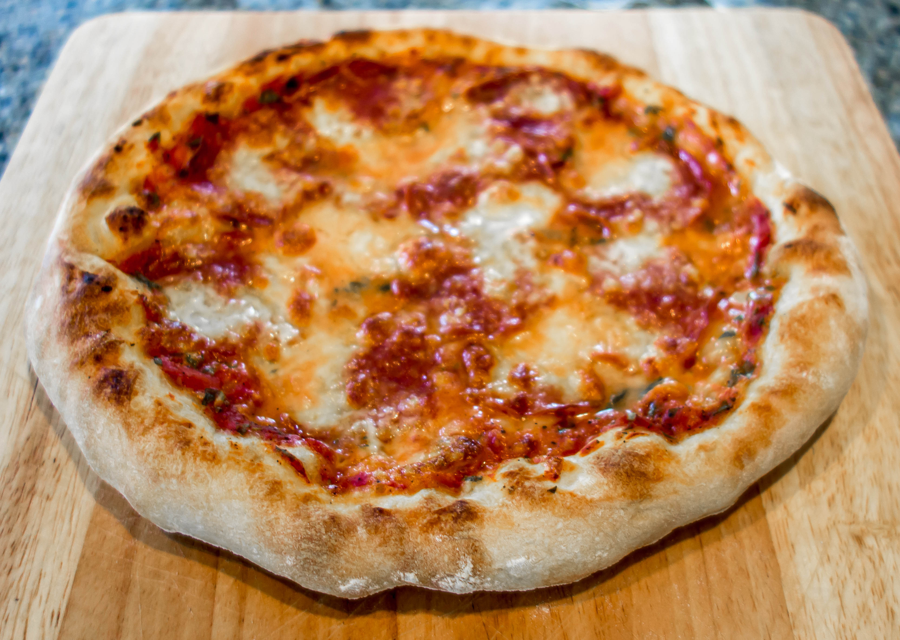

Back
The World's Most Popular Dish!

Description:
This dish is and has been one of the most popular dishes in America. It originated from Italy and is also one of the most diverse foods in the world.
Every nation in the world has it's own style of pizza. What makes this dish great is the flexibility of the toppings to cater to your individual tastes. Make it your own!
The Pizza Ingredients
Pizza
100 grams diced low moisture whole milk mozzarella
20 grams grated cheddar
3 large fresh basil leaves sliced
2 tsp finely grated parmesan cheese
2 tbsp vegetable oil
1 tsp corn meal
1/2 tsp garlic powder
pinch salt and pepper
1 tsp blue chees crumbles (optional)
4 large slices of pepperoni (optional)
Pizza Dough
140 grams bread flour
113 grams water
1/4 tsp instant yeast
1/2 tbsp extra virgin olive oil
1/2 tsp sea salt
1 tsp sugar
Sauce
60 grams organic san marzano tomato sauce
1 tsp sugar
3 large basil leaves sliced
pinch of sea salt
1 tsp olive oil
2 tsp garlic powder
1 tsp dried oregano
Steps
Pizza Dough
- Add 113 grams luke warm water to a medium sixed bowl.
- Add your 1 tsp sugar, dissolve it, then add your yeast and wait until blooms to make sure its still active.
- Once you see the yeast bloom, add your olive oil, salt and flour to the bowl. Mix by hand until the four has absorbed all the moisture.
- Mix by hand for an additional 5 minutes to strengthen the gluten by folding the pizza dough into itself. If your hand gets too sticky you can add a little more flour.
- Let rest and cover with plastic wrap overnight in the fridge or for at least 4 hours at room temperature or until doubled in size.
- When preparing the dough for cooking, form into a ball and let rest for at least 30 minutes.
Sauce
- Mix all the ingredients for the sauce mixture together and let rest for at least 30 minutes.
Pizza Assembly and cooking
- Flour a work surface and set your dough ball on it, dust the top of the dough ball and let sit for at least 30 minutes.
- Set your oven on broil and heat the oven for at least 15 minutes.
- Grab a medium sized pan and add your vegetable oil, corn meal, garlic powder, salt and pepper.
- At this point, stretch out your dough ball into a disk shape as best as you can. Be gentle and patient.
- When your dough is reasonably stretched to the point it can take up the space in your pan, heat the pan on medium high heat.
- When warmed, slide your dough onto the pan.
- Immediately add your sauce and desired parmesan on top of the dough and let cook for about 3-4 minutes.
- Remove pizza from heat source.
- Add your cheese mixture and any desired toppings at this point.
- Place your pizza on the highest rack into the pre heated oven on broil.
- Let cook for about 5 minutes and remove from the oven when the cheese is a golden brown color.
- Slice the pizza and serve!